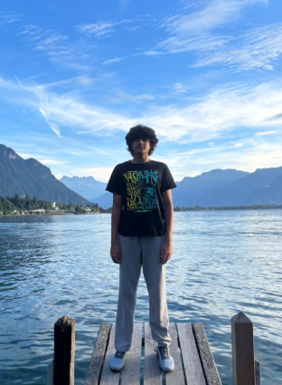
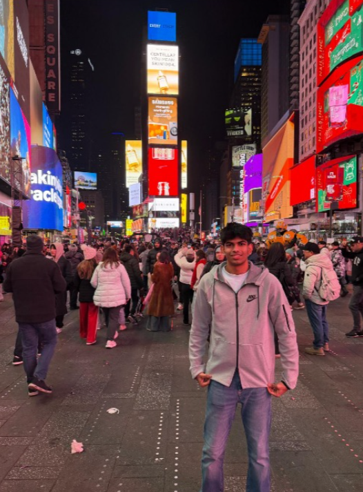
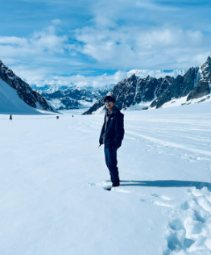
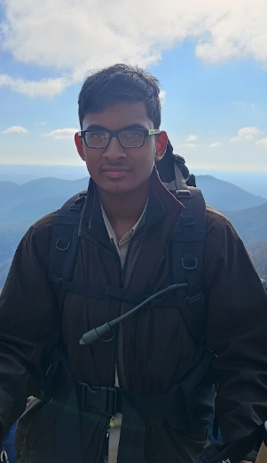
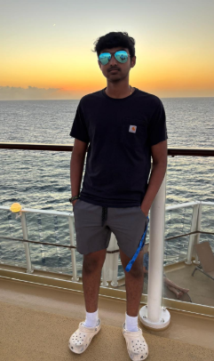

Nikash Nemmara
President

Nikash serves as chapter president, helping lead the team and guide the chapter’s service work.
MEET OUR CHAPTER
We’re students, friends, and changemakers. Together, we’re bringing the mission of Operation Smile to South Forsyth.

WHO WE ARE
Our chapter brings South Forsyth High School students together around a simple idea: everyone has something to contribute.
Through collection drives, patient cards, awareness activities, and student service, we support Operation Smile’s mission while building a more caring community right here at school.
We learn by doing, lead with kindness, and make room for everyone who wants to help.
Explore our storyTHE PEOPLE BEHIND THE PURPOSE
Meet the students helping turn our shared compassion into action.
President

Nikash serves as chapter president, helping lead the team and guide the chapter’s service work.
Vice President

Renesh serves as chapter vice president, supporting chapter planning and helping the team turn ideas into action.
Officer

Advaith serves as an officer, helping support chapter activities and service projects.
Officer

Yagnaram serves as an officer, helping support chapter activities and service projects.
Officer

Pranav serves as an officer, helping support chapter activities and service projects.
YOUR NEXT CHAPTER STARTS WITH A SMILE
A little of your time can mean a lot. Join our South Forsyth community.